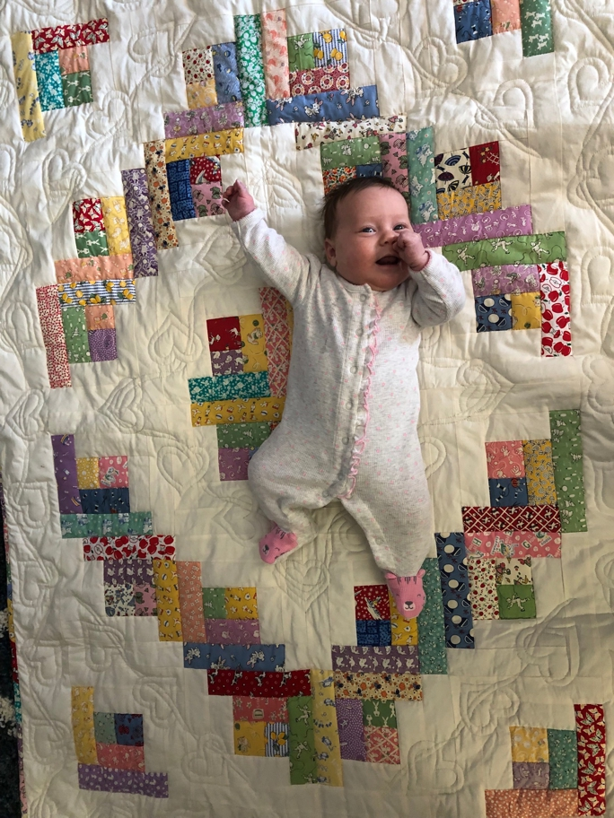

This quilt, a log cabin pattern, was made for our newest grand daughter, Josie Laura. The fabrics are traditional, unbleached muslin and depression era reproductions. The quilting was a new experiment in that I used the same design for quilting in the muslin of the blocks as was used in the border, a new idea for me.